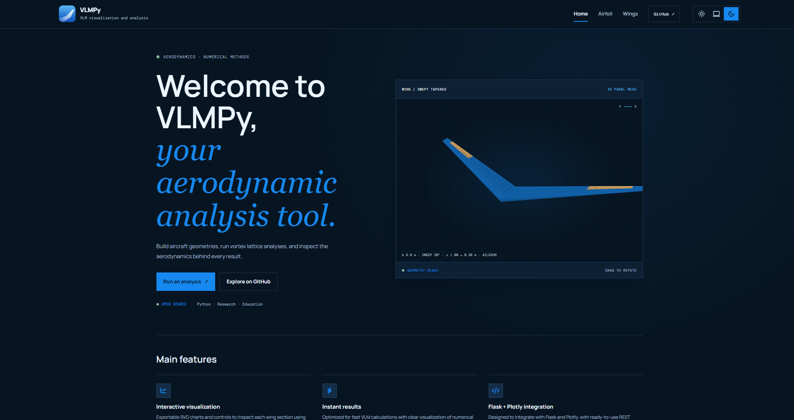
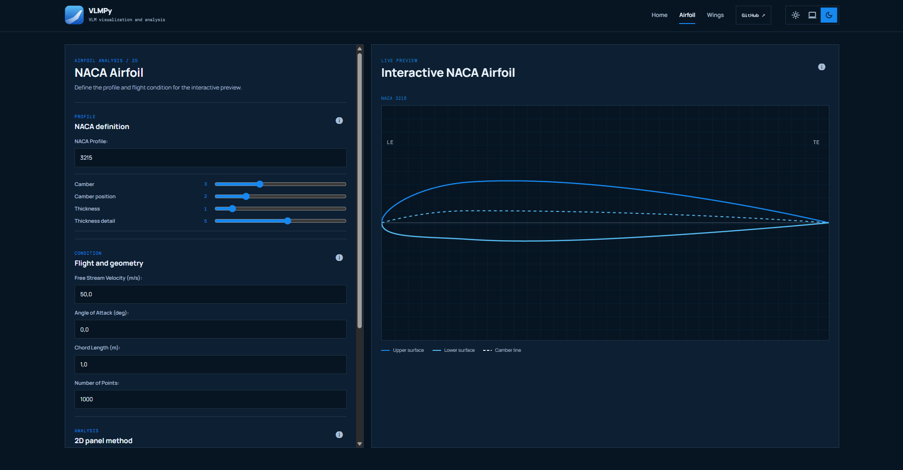
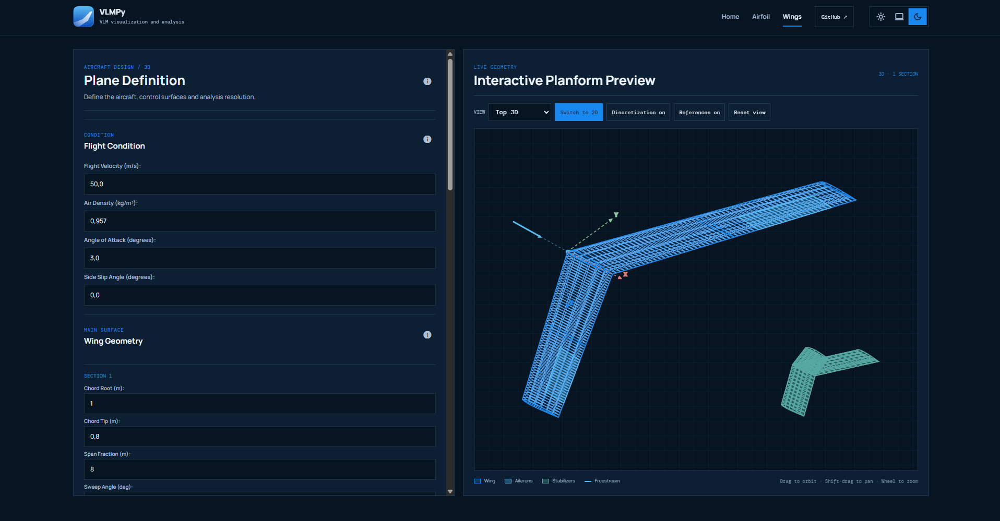
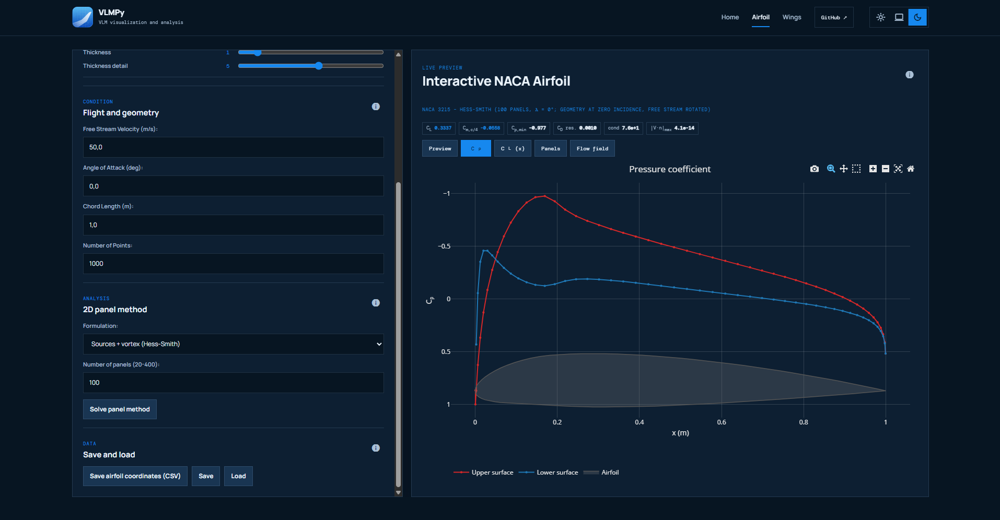
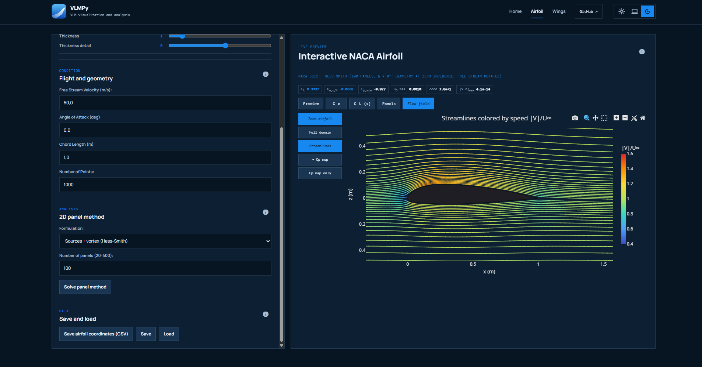
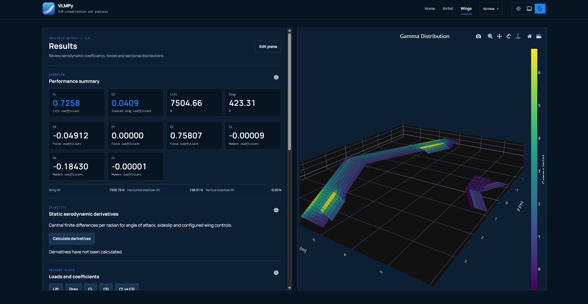

VLMPy — Aerodynamic Analysis Tool
I developed a Python application and toolkit to model lifting surfaces with the Vortex Lattice Method, inspect panel geometry, and explore lift and drag distributions.
Make aerodynamic analysis inspectable
I developed VLMPy for my final-year project to make lifting-surface geometry, discretisation, and aerodynamic distributions inspectable in one workflow. My aim was to compare wing configurations under defined flight conditions and make each result easier to trace back to its inputs.
I scoped the tool to subsonic, inviscid flow. I treat it as an engineering analysis aid, not a substitute for viscous CFD, wind-tunnel testing, or flight-test evidence.
Discretise the lifting surfaces, then solve for circulation
I divide each lifting surface into spanwise and chordwise panels. For each panel, my pre-processor calculates control points and normals; the solver assembles the vortex influence matrix and solves the no-penetration system for circulation.
Pij Γj = wi
I solve the circulation system numerically, then calculate force and coefficient distributions from the panel results. I keep geometry, flight conditions, and panel counts as explicit inputs so I can trace every output to its setup.
From the interface to the panel model
I combined the Python VLM core with a Flask-backed interface, a PyQt5 desktop wrapper, and Plotly/Matplotlib visualisations. I also published a Python API and Jupyter examples in the project repository.

Airfoil definition and inspection
I made the geometry configurable through parameters such as sweep, dihedral, taper, and control-surface settings, then exposed flight-condition inputs including angle of attack, sideslip, and airspeed. The repository also includes NACA airfoil utilities, so I could generate a section and inspect how a change to the wing definition affected the panel model.

Wing geometry and panel discretisation
I designed the outputs to show more than a single coefficient: I can inspect the 3D discretised surfaces, local lift distributions, and aerodynamic plots through the application or Python interface. This makes the intermediate geometry and the final distributions available in the same analysis workflow.

Compare outputs, and state what the evidence does not say
I compared aerodynamic curves and distributions against XFLR5. My report documents the comparison workflow, but it does not provide a complete error budget or mesh-convergence threshold, so I do not claim a general accuracy percentage here.
The screenshots below show the application's airfoil and wing results views. They are presented separately from the XFLR5 comparison discussed above.
Airfoil results


Wing results

What I would carry forward
My main engineering lesson was to keep intermediate states visible. Geometry, panel layout, circulation, and local distributions help me explain a coefficient instead of treating it as a black-box output.
In a next iteration, I would automate mesh-refinement checks and make validation cases reproducible from saved inputs, so I could audit and extend each comparison.
The next steps involve extending the aerodynamic capabilities of VLMPy to handle compressible and unsteady flows, as well as incorporating fuselage effects through the panel method.
Next case study: UAXSat IV →